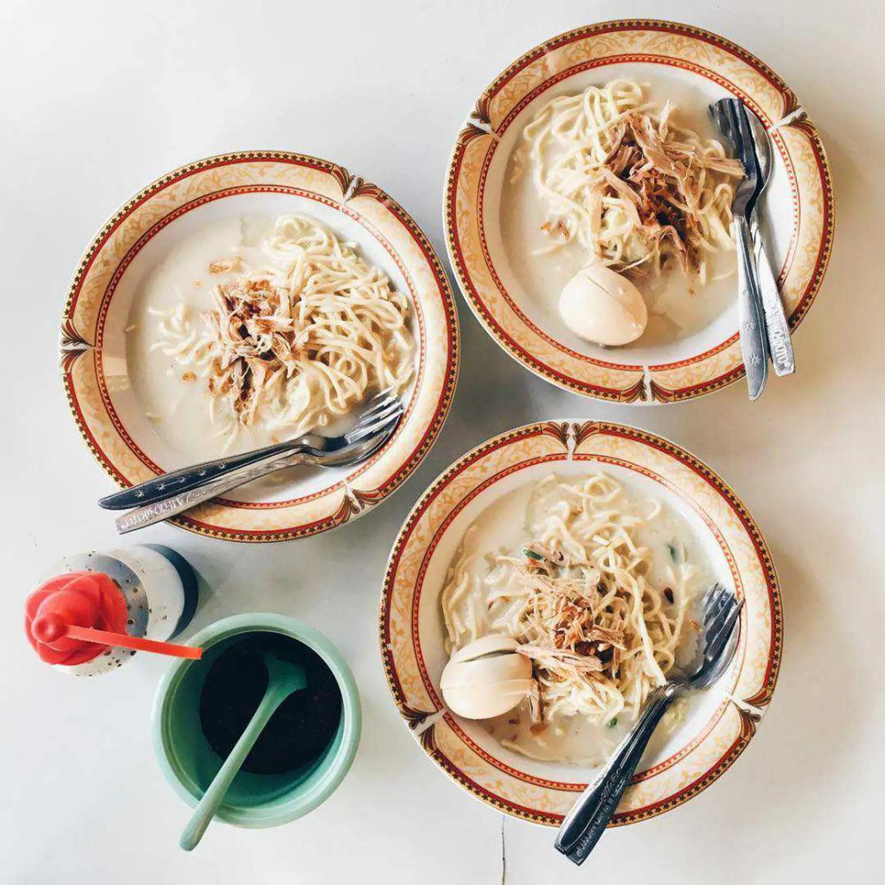
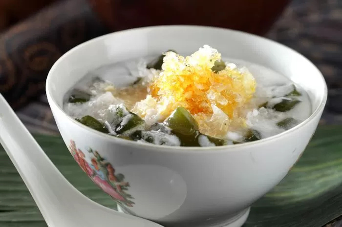
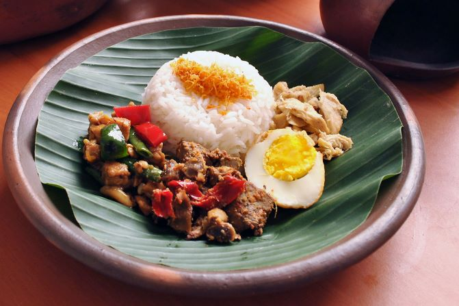
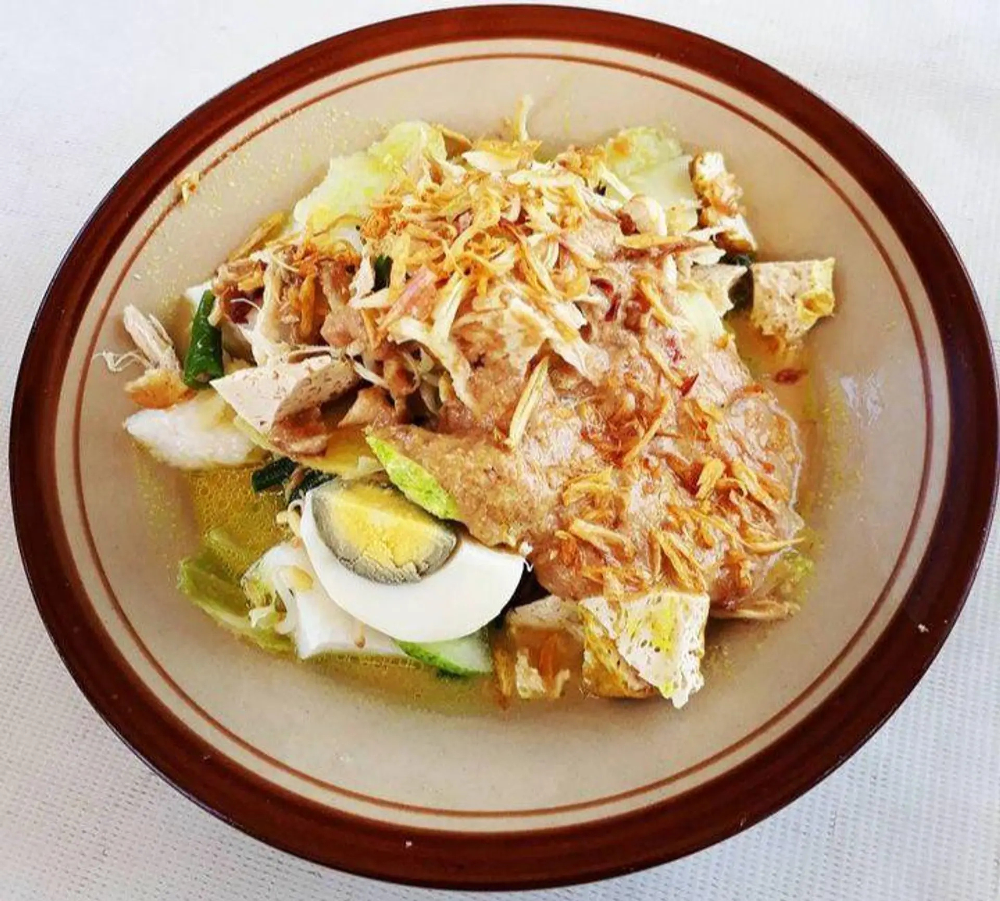

Empal Gentong
Empal gentong adalah makanan khas masyarakat Cirebon, Jawa Barat. Empal gentong adalah makanan khas.. Baca Selengkapnya
Nasi Jamblang
Sega Jamblang atau Nasi Jamblang dalam Bahasa Indonesia adalah makanan khas dari Cirebon, Jawa Barat..Baca Selengkapnya
Sego Lengko
Nasi Lengko berasal dari Cirebon dan menyebar ke beberapa daerah di pantai utara pulau Jawa, seperti: Baca Selengkapnya
Docang
Docang adalah makanan tradisional yang berasal dari Cirebon dan sekitarnya yang terbuat dari potongan lontong.. Baca Selengkapnya
Mi Koclok
Ada dua versi tentang asal usul nama mi koclok. Pertama, mi koclok berasal dari kata koclok yang berarti dikocok..Baca Selengkapnya
Es Cuing
Es cuing atau es cuwing adalah sejenis minuman penyegar yang terbuat dari gel yang menyerupai agar-agar, bahan pembuatannya..Baca Selengkapnya
Nasi Bogana
Nasi bogana atau nasi begana dapat disebut pula dengan nasi ponggol..Baca Selengkapnya
Sate Kalong
Sate kalong adalah makanan khas Cirebon. Sate ini terbuat dari daging kerbau yang dihaluskan dengan cara ditumbuk...Baca Selengkapnya